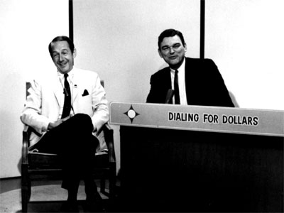
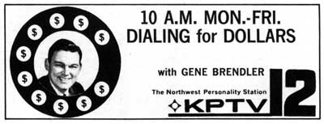

|
|
Dialing for Dollars (Dialing for Dollars
Movie)
 A live morning game show, hosted by Gene Brendler, where viewers could call-in to win cash prizes during breaks in the morning movie. In early 1968, the movie became news, "12 in the Morning," and an episode of "Laramie," with "Dialing for Dollars" segments inside. In the summer of 1968, episodes of "Victory at Sea" and "Hennesey" ran in the time period. By August, the show was scaled back to one hour, and included interviews and five minutes of news. 
This page last updated on August 23, 2025 |


|
Yesterday's KPTV Website design and content ©2003-2025 by Ron Dunevant, LLC unless otherwise noted. |